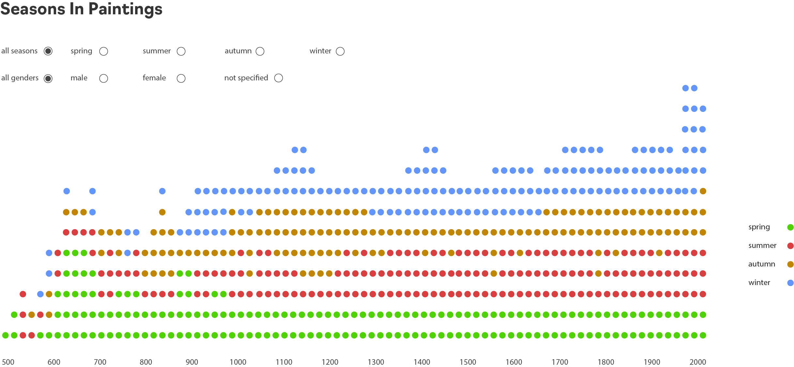
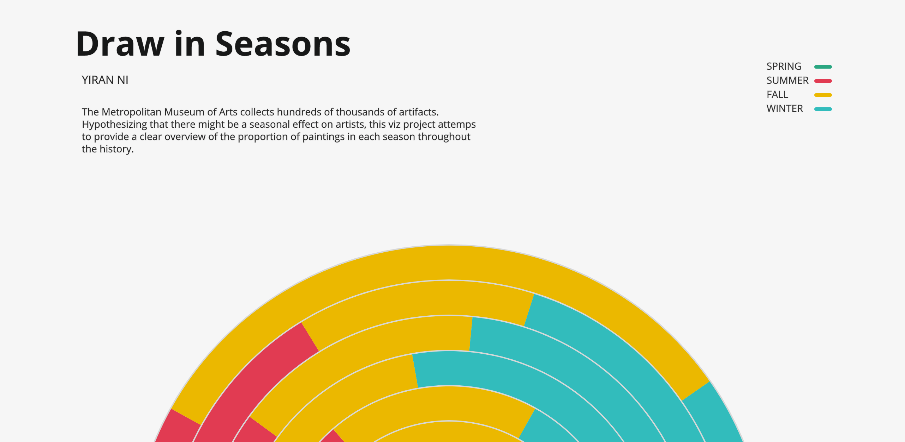
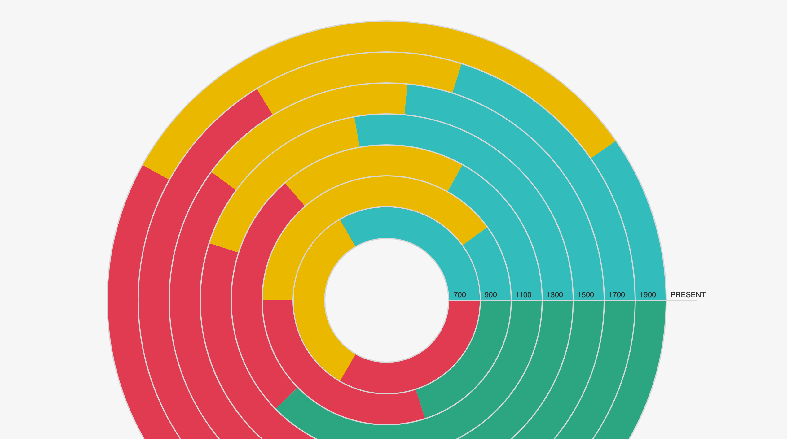
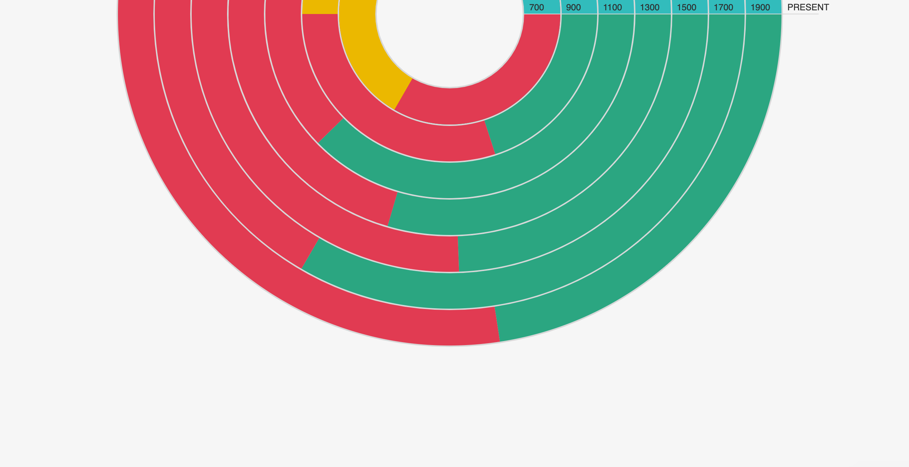

Project 1 - Draw in Seasons (Quantitative Data)
In this project, I visualizes quantitative data of number of paintings about 4 seasons in different decades. This provide a clear overview of the proportion of paintings in each season throughout the history.
Link: Draw in SeasonsProcess
The first version of this project is a stack graph where each spot represents one artwork, x axis represents decade. This works well to view the total number of artworks of 4 seasons in every decade, but it is not clear to compare 4 seasons within the same decade.
Project Overview
Based on the sketch in the process, I developed the following data visualization. The timeline goes from the inner circle to the outer circle. Each color represents one season. The angle of the arc that represent one season represents the amount of artworks in the specific season
  